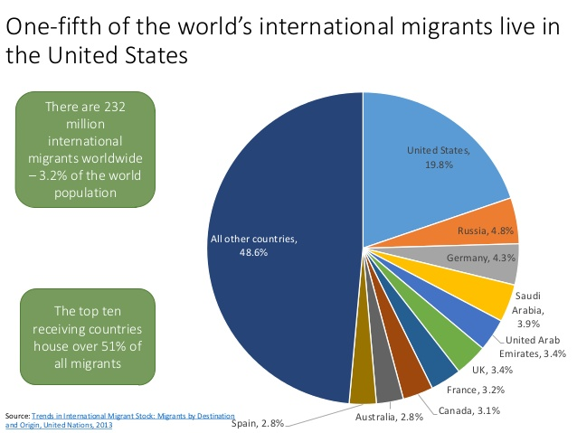
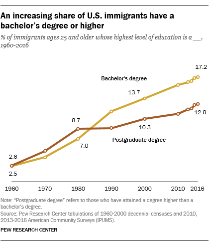
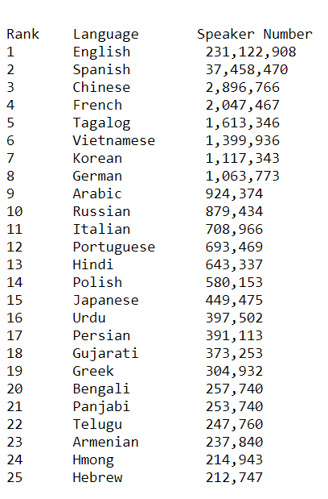
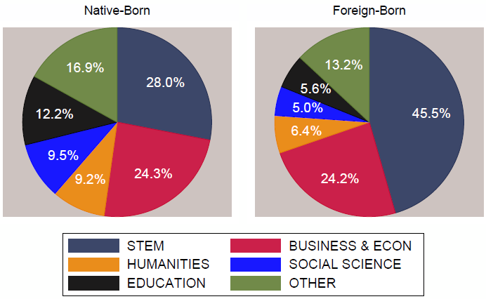
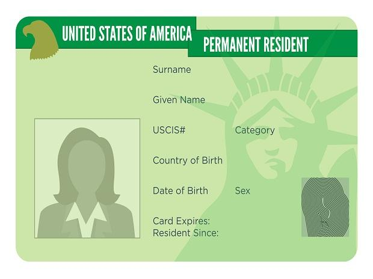

Reading Between the Lines: The Truth About ImmigrationReading Between the Lines:
The Truth About Immigration
Immigration is the international movement of people into a destination country of which they are not natives or where they do not possess
citizenship in order to settle or reside there, especially as Permanent residents or naturalized citizens, or to take up employment as a
migrant worker or temporarily as a foreign worker.
......
The United States prides itself on being a nation of immigrants, and the nation has a long history of successfully absorbing people from across the globe.
The successful integration of immigrants and their children contributes to economic vitality and to a vibrant and ever-changing culture. Americans have
offered opportunities to immigrants and their children to better themselves and to be fully incorporated into U.S. society, and in exchange immigrants
have become Americans—embracing an American identity and citizenship, protecting the United States through service in its military, fostering technological
innovation, harvesting its crops, and enriching everything from the nation’s cuisine to its universities, music, and art. 2015 marked the 50th anniversary
of the passage of the Immigration Act of 1965, which began the most recent period of mass immigration to the United States. This act abolished the restrictive
quota system of the 1920s and opened up legal immigration to all the countries in the world, helping to set the stage for a dramatic increase in immigration from
Asia, Africa, Latin America, and the Caribbean. At the same time, it limited the numbers of legal immigrants coming from countries in the Western Hemisphere, thus
establishing restrictions on immigrants across the U.S. southern border and setting the stage for the rise in undocumented border crossers. Although the Immigration
Act of 1965 exemplified the progressive ideals of the 1960s, the system it engendered may also hinder some immigrants’ and their descendants’ prospects for integration.
Today, the 41 million immigrants in the United States represent 13.1 percent of the U.S. population. The U.S.-born children of immigrants, the second generation,
represent another 37.1 million people, or 12 percent of the population. Thus, together the first and second generations account for one out of four members of the U.S. population. Whether they are successfully integrating is therefore a pressing and important question.
The United States has long been considered a nation of immigrants. Attitudes toward new immigrants by those who came before have vacillated between welcoming and exclusionary over the years.
Thousands of years before Europeans began crossing the vast Atlantic by ship and settling en masse, the first immigrants arrived in North America and the land that would later become the United States. They were Native American ancestors who crossed a narrow spit of land connecting Asia to North America some 20,000 years ago, during the last Ice Age
By the early 1600s, communities of European immigrants dotted the Eastern seaboard, including the Spanish in Florida, the British in New England and Virginia, the Dutch in New York, and the Swedes in Delaware. Some, including the Pilgrims and Puritans, came for religious freedom. Many sought greater economic opportunities. Still others, including hundreds of thousands of enslaved Africans, arrived in America against their will.
The sending countries with the largest numerical increases in immigrants in the United States between 2010 and 2017 were India (up 830,215); China (up 677,312); the Dominican Republic (up 283,381); the Philippines (up 230,492); Cuba (up 207,124); El Salvador (up 187,783); Venezuela (up 167,105); Colombia (up 146,477); Honduras (up 132,781); Guatemala (up 128,018); Nigeria (up 125,670); Brazil (up 111,471); Vietnam (up 102,026); Bangladesh (up 95,005); Haiti (up 92,603); and Pakistan (up 92,395).
The states with the largest numerical increases since 2010 were Florida (up 721,298); Texas (up 712,109); California (up 502,985); New York (up 242,769); New Jersey (up 210,481); Washington (up 173,891); Massachusetts (up 172,908); Pennsylvania (up 154,701); Virginia (up 151,251); Maryland (up 124,241); Georgia (123,009); Michigan (up 116,059); North Carolina (up 110,279); and Minnesota (up 107,760).
The states with the largest percentage increases since 2010 were North Dakota (up 87 percent); Delaware (up 37 percent); West Virginia (up 33 percent); South Dakota (up 32 percent); Wyoming (up 30 percent); Minnesota (up 28 percent); Nebraska (up 28 percent); Pennsylvania (up 21 percent); Utah (up 21 percent); and Tennessee, Kentucky, Michigan, Florida, Washington, and Iowa (all up 20 percent).
Immigrants usually live in states closer to the border/country of where they came from, like Texas, Georgia, Louisiana, ALabama, Florida, California, etc.

High School Graduate or less:
U.S. Born: 37.3%
U.S Immigrants: 51.3%
Two year degree/some College:
U.S. Born: 31.1%
U.S. Immigrants:18.7%
Bachelor's degree or higher:
U.S. Born: 31.6%
U.S. Immigrants: 30.0%
There is a continuous increase in the number
of US Immigrants who have a Bachelor's degree or higher since 1960 with
a percentage of 2.5 to 17.2% in 2016.

The Diversity in Language
In the 18th and
19th centuries conquest played a big role with
adding different cultures to the USA, however
language diversity has
been driven primarily by immigration to the U.S.
Nevertheless,this country
has also been a place in which immigrant languages die out to
be replaced by the country's main language: English.
In the second languages spoken in the
US, Spanish takes up 81%.Following Spanish is Chinese, with 6%. French is next with 5% , Vietnamese with
3%, and Korean with 2%.

In 2018, there were 28.2 million foreign-born persons in the U.S labor force, compromising 17.4 percent of the total.
Foreign-born men were more likely to participate in the labor force than native-born men (77.9% versus 67.3%), while foreign-born women were less likely to participate than native-born women (54.3% versus 57.6%).
The median usual weekly earnings of foreign-born full-time wage and salary workers were $758 in 2018, compared with $910 for their native-born counterparts.(Differences in earnings reflect a variety of factors, including variations in the distributions of foreign-born and native-born workers by educational attainment, occupation, industry, and geographic region.) Foreign-born workers were more likely than native-born workersto be employed in service occupations and less likely to be employed in management, professional, and related occupations.

For unaccompanied minors from Central American countries, 2014 was the biggest year. Overall, 68,541 minors entered through the southwestern United States border. This amount was almost double the amount in 2013. In 2015, the numbers dropped to 39,970, and rose again in 2016 with 59,692 unaccompanied minors arriving.
Many of the immigrant children from El Salvador, Honduras, and Mexico are escaping extreme violence, often gang-related and fueled by the drug trade. A 2013 report by the UN High Commissioner for Refugees indicated that 63% of the immigrants from El Salvador, 43% of Hondurans, and 32% of Mexicans cited violence in society (mostly gang-related violence) as the reason for leaving. Violence in the home was another strong motivator, with statistics standing at 63% for El Salvador, 24% for Honduras, and 17% for Mexico. "Salvadoran and Honduran children ... come from extremely violent regions where they probably perceive the risk of traveling alone to the U.S. preferable to remaining at home," the report said. Guatemalan children cited deprivation (29%), violence in the home (23%), and violence in society (20%) as reasons for leaving their countries. Children in Honduras also cited poverty as reasons for leaving, while many girls from El Salvador reported fear of both home and gang-related sexual abuse.
In 2014, one in five births (791,000) in the United States was to an immigrant mother (legal or illegal). Our best estimate is that legal immigrants acounted for 12.4 percent (494,000) of all births, and illegal immigrants accounted for 7.5 percent (297,000). The 297,000 births per year to illegal immigrants is larger than the total number of births in any state other than California and Texas. It is also larger than the total number of births in 16 states plus the District of Columbia, combined.
U.S. immigration law is very complex, and there is much confusion as to how it works.
The Immigration and Naturalization Act, the body of law governing current immigration policy,
provides for an annual worldwide limit of 675,000 Permanent immigrants, with certain exceptions for close family
members. Lawful Permanent residency allows a foreign national to work and live lawfully and Permanently
in the United States. Lawful Permanent residents are eligible to apply for nearly all jobs
and can remain in the country even if they are unemployed. Each year the United States also
admits noncitizens on a temporary basis
Immigration to the United States is based upon the following principles: the reunification of families, admitting immigrants with skills that are valuable to the U.S. economy, protecting refugees, and promoting diversity.
1798
Naturalization Act(officially An Act to Establish a Uniform Rule of Naturalization;
ch. 54, 1 Stat. 566) Alien Friends Act(officially An Act Concerning Aliens; ch. 58, 1 Stat. 570)
Alien Enemies Act(officially An Act Respecting Alien Enemies; ch. 66, 1 Stat. 577)
Extended the duration of residence required for immigrants to become citizens to 14 years.
Enacted June 18, 1798, with no expiration date, it was repealed in 1802. Authorized the president to
deport any resident immigrant considered "dangerous to the peace and safety of the United States."
It was activated June 25, 1798, with a two-year expiration date. Authorized the president to apprehend
and deport resident aliens if their home countries were at war with the United States of America.
Enacted July 6, 1798, and providing no sunset provision, the act remains intact today as 50 U.S.C. § 21
1882
Chinese Exclusion Act Restricted immigration of Chinese laborers for 10 years.
Prohibited Chinese naturalization. Provided deportation procedures for illegal Chinese.
Marked the birth of illegal immigration (in America). The Act was "a response to racism [in America]
and to anxiety about threats from cheap labor from China."
1885
Alien Contract Labor Law (Sess. II Chap. 164; 23 Stat. 332)
Prohibited the importation and migration of foreigners and aliens under
contract or agreement to perform labor in the United States
1903
Immigration Act of 1903 (Anarchist Exclusion Act)
Added four inadmissible classes: anarchists, people with epilepsy, beggars, and importers of prostitutes.
1906
Naturalization Act of 1906
Standardized naturalization procedures
Made some knowledge of English a requirement for citizenship
Established the Bureau of Immigration and Naturalization
1934
Equal Nationality Act of 1934
Allowed foreign-born children of American mothers and alien fathers who had entered America before
age 18 and lived in America for
five years to apply for American citizenship for the first time.
Made the naturalization process quicker for American women's alien husbands.
1940
Nationality Act of 1940
Pertains chiefly to "Nationality at Birth," Nationality through Naturalization," and "Loss of Nationality"
1943
Chinese Exclusion Repeal Act of 1943(Magnuson Act)
Repealed the Chinese Exclusion Act and permitted Chinese nationals already
in the country to become naturalized citizens.
A quota of 105 new Chinese immigrants were allowed into America per year.
1952
Immigration and Nationality Act(McCarran-Walter Act)
Set a quota for aliens with skills needed in the US.
Increased the power of the government to deport illegal immigrants suspected of Communist sympathies.
Early 1980s
About 1.3 million illegal immigrants entered the US.
1986
Immigration Reform and Control Act
Started sanctions for knowingly hiring illegal aliens.
Provided amnesty to illegal aliens already in the US.
Increased border enforcement.
Made it a crime to hire an illegal immigrant.
1999
As of 2001 an estimated 3.1 million immigrants entered the United States illegally between 2000 and 2005.
From 1998 to 2001, Mexicans accounted for 68% of immigrants who entered the United States illegally.
2010
The DREAM Act was passed.
2012
Deferred Action for Childhood Arrivals(executive action)
On June 15, 2012, the Secretary of Homeland Security announced that certain
people who came to the United States as children and meet several
guidelines may request consideration of deferred action for a period of two years,
subject to renewal. They are also eligible for work authorization.
Deferred action does
not provide lawful status] As of 2018, the Trump administration was attempting
to phase out the program, but was at least temporarily blocked by several
lawsuits.
To become a resident of the USA you need to get a Green Card which gives you official immigration status, entitles you to certain rights and responsibilities, and is required if you wish to naturalize
as a US Citizen.

Types of Visas
(click the image to enlarge!)
How many visa applications for Permanent immigration (green cards) are backlogged?
In February 2019, the U.S. government was still processing some family-sponsored visa applications dating to August 1995, and employment-related visa applications from August 2007. According to data on the petitions submitted to the State Department, there were about 3.8 million applicants (including spouses and minor children) who were on the waiting list as of November 1, 2018, the first time the backlog dropped in recent years.The overwhelming majority of backlogs were family-sponsored applicants (3.7 million, which includes the principal applicant and their immediate family members). About 121,000 were employment-sponsored applicants and their families. Of the overall 3.8 million applicants, 1.2 million were citizens of Mexico, followed by those from the Philippines (314,000), India (299,000), Vietnam and China (with 232,000 each). Family- and employment-based prospective immigrants who are waiting to adjust their status to lawful Permanent resident from within the United States are not included in the State Department estimate. USCIS also publishes backlog statistics but only for petitions approved in one of the five employment-based categories. USCIS data show that close to 395,000 approved employment-based immigrant petitions were awaiting a priority date based on the May 2018 Department of State Visa Bulletin. The figure corresponds to the number of primary applicants covered by these petitions but excludes their dependents. To MPI knowledge, USCIS did not publish backlog statistics on other types of green card applications the agency adjudicates. In other words, the overall number of people waiting for a green card—within and outside of the United States is likely to be larger than the 3.8 million reported by the State Department (as of November 2018) and 395,000 reported by USCIS (as of May 2018).
Meet The Team!
Hey everyone! We are Carolyn Perez, Lucy Ma,
Joselyn Ruiz, and Sarah Khoja. We are all part of the Girls Who Code 2019 Summer Immersion Program
that is helping us develop an interest in Computer Science. In this program we learned the importance
of understanding technology and how it can impact our daily lives. We made
this website in order to help people be informed about sometimes-ignored-information
about immigration. Thank you!
Lucy Ma
Rising Junior
Hey! My name is Lucy Ma and I am a rising junior at CLHS. Through Girls Who Code, I have developed a passion for computer science and cannot wait to see what the future in technology has in store for us all! My favorite things are musictraveling and exploring nature. In the future, I plan on majoring in CS and getting a minor in business finance.
Joselyn Ruiz
Rising Senior
Hi! My name is Joselyn Ruiz and I am a rising senior in YES Prep East End. This was my first experience with coding and it definitely taught me many new things and it increased my interest in technology.I enjoy going to the beach, going to parties, and going out to new places. I love Math and I want to pursue a career in the Engineering field.
Carolyn Perez
Rising Senior
Hi! My name is Carolyn, and I am 17 years old. This is my first experience with code. In my free time, I love cooking, makeup, and spending time with my grandma.
Sarah Khoja
Rising Junior
Hi, my name is Sarah Khoja. I go to Clements High School and will be a junior this coming 2019- 2020 school year. In my free time I like to sow, do art, and read books.